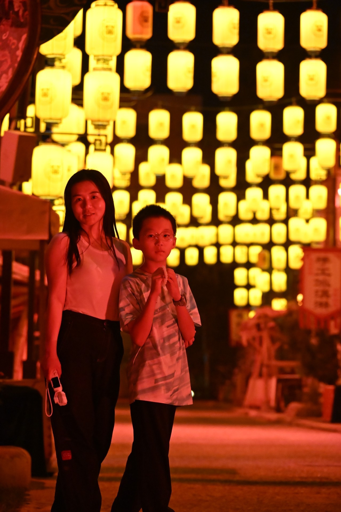
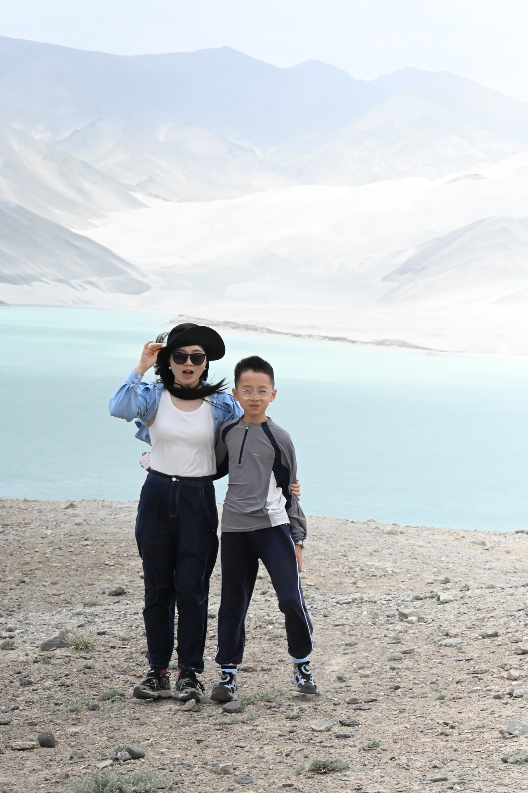
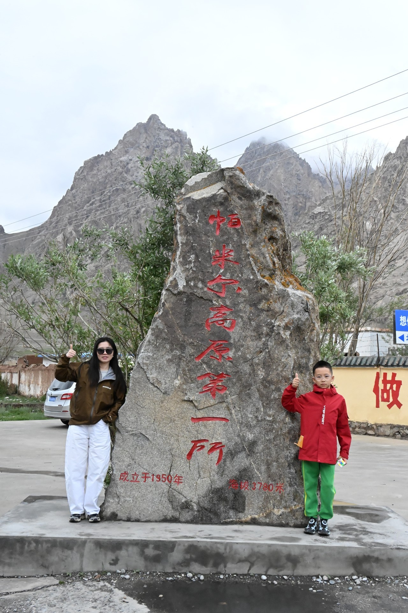
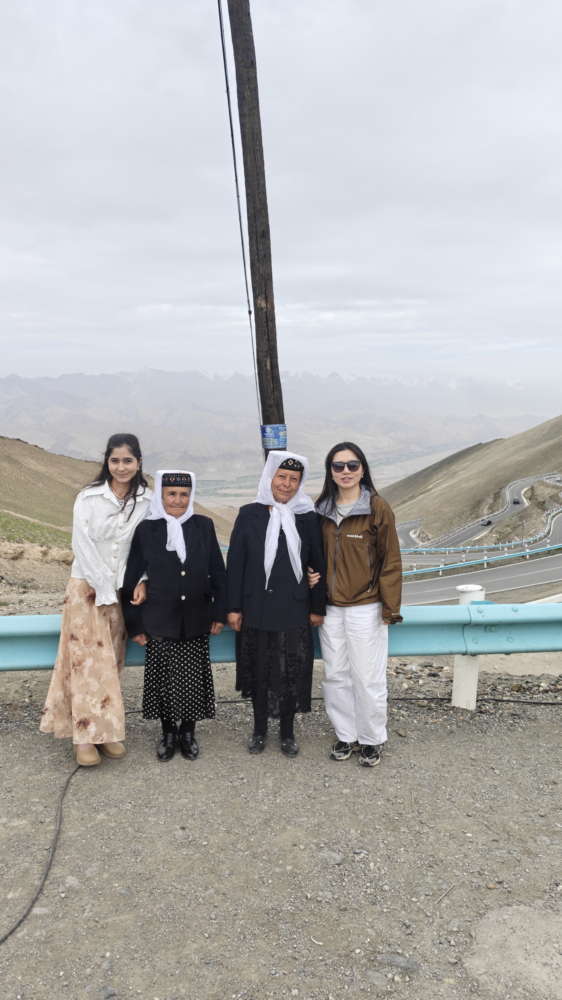

新疆有我遗失的童真。
放学以后，仿佛没有作业，只有漫长的黄昏。骑马，打水漂，追着风跑；玩到凌晨，天色才像一块慢慢凉下来的蓝缎子，盖在村庄头上。大人并不急着唤你回去，孩子也不急着长大。时间在这里有一点奢侈，像一只羊慢慢咀嚼草叶。

明艳并不喧哗，它只是安静地待在生活里。

夜色落下来，灯火便把人间照得更近。
纯粹，是不解释
新疆也有我向往的纯粹。它辽阔得不肯解释自己。山是山，风是风，路远得像一句没有说完的话。你站在帕米尔高原上，才晓得人原来可以这样小，小得不必逞强；而天地又这样大，大得容得下每一种心事。

高原教人的第一课，不是征服，是放慢。海拔高，便骑着马慢慢走；风大，便把领口拉紧一点。没有谁要同自然争辩。自然早已把答案放在那里，只等人肯低头看一看。
有些守护，不必说得太响
我在瓦罕走廊附近，见过高海拔边境派出所的年轻民警。那里四千多米，云低得像要落在人肩上，氧气也不大肯慷慨；可他们把日子守在那里，把“寻常”两个字守得很重。奉献这件事，若是说得太响，反倒轻了。真正的奉献，总是沉默的，像高原上的石头。

瓦罕走廊附近的边境派出所前。

红其拉甫，海拔五千一百米。
人人都是艺术家
新疆还有我痴迷的热烈，和我欣赏的明艳。一位纺织老人坐在织机前，手上有岁月留下的纹路。线穿过线，颜色叠着颜色，像把一个家族的旧梦、一个民族的耐心，都织进布里去。
艺术在这里没有摆出高傲的姿态。它落在毯子上，落在衣襟上，落在一段旋律、一次旋转、一个馕饼的花纹里。这里的人似乎天生懂得：日子不必完美，也可以有情调。

专心纺织艾德莱斯的老人。

热情的相遇，是旅途里最亮的一笔颜色。
馕太硬，便掰进羊肉汤里泡一泡；天气太热，便把自己埋进沙子里，等湿气散去；葡萄熟了，不必等谁批准，摘下来就吃。没有什么大道理。只是日子到了这里，忽然学会了不和自己过不去。
琉璃的内里
新疆像一颗琉璃，外表五光十色，里面却明亮得近乎孩子气。它又像一位不爱争辩的智者，不企图说服你，只让日子和路程一点一点把你说服。你会明白，尊重自然并不是退让；顺势而为，也不是认命。那是一种不慌张的聪明。
当然，这只是我这个外地游客看见的新疆。任何地方都有它的尘土、世俗和不易；美也从来不是全无阴影的。可我愿意诚实地承认，我看见的这一面，已经足够令我动容：自由、热烈、宽厚，以及一种不必时时证明自己的生命力。

南疆这一趟，让我的精神又富了一点。回广州的飞机上，窗外的云层一层一层，像被揉皱又摊开的信纸。我把这些话写下来，忽然觉得自己也该回去继续写诗了。
愿我在复杂的世界里，仍做一个简单的人；愿我学会新疆人身上那一点最难得的本事——沉得住气。
真好。我想一直做一个自由的诗人。